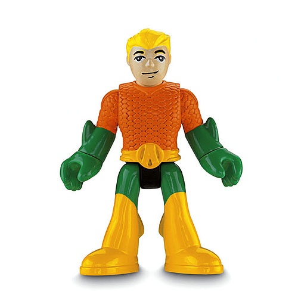
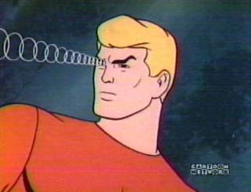

Powers and Abilities
Aquaman's most widely recognized power is the telepathic ability to communicate with marine life, which he can summon from great distances. Although this power is most often and most easily used on marine life, Aquaman has at times demonstrated the ability to affect any being that lives upon the sea (e.g., sea eagles), or even any being evolved from marine life (e.g., humans and some aliens). Before the New 52 Aquaman had access to a morphogenic field phenomenon called The Clear, an existential effigy that connects all oceanic and sea related life together as a whole, allowing him to empathize and share in the experiences of all aquatic based lifeforms. Per the 2011 DC continuity reboot, Aquaman's telepathy has been greatly downplayed: acknowledging that most marine life doesn't possess enough intelligence to carry a meaningful telepathic communication, Aquaman is now stated to simply add compulsions and needs in the mindset of aquatic life, compelling them to do his bidding by a subtle altering of their cerebellum. Recently he has shown to have been blessed by the Sea God Poseidon possibly regaining a stronger but latent connection to The Clear when he was shown to bend the poisonous bile emitting from an old world structure that had intruded from the sea poisoning it with dark magic, developing some liquid manipulatory abilities. This blessing also gave him a protective charm against the foul magics of the Thule dimension it had originated from.
More Info
Aquaman has a number of other superhuman powers, most of which derive from the fact that he is adapted to live and thrive in the harshest of underwater environments. He has the ability to breathe underwater and possesses a superhuman physique strong enough for his lungs to work unaffected by the immense pressure and the cold temperature of the ocean depths, also making him tough enough to withstand attacks from superhuman opponents and resist machine gun fire. He also possesses superhuman strength as a result. He can swim at very high speeds, capable of reaching speeds of 3,000 meters per second (10,800 km [roughly 6,700 miles] per hour) and can swim up Niagara Falls. He can see in near total darkness and has enhanced hearing granting limited sonar. Although he can remain underwater indefinitely without suffering any ill effects, Aquaman grows weak if he remains on land for extended periods. However, when Batman invented Aquaman's water suit he was able to walk on land for an indefinite amount of time and was no longer vulnerable to a "dehumidifier". This weakness was later removed from continuity in 2011, establishing that he grew up on land before learning of his Atlantean heritage, but he still runs the risk of dying by dehydration within incredibly hostile environments. Recently AC had been bestowed an ability he never showcased before gifted unto him by an old Sea Monarch, so far one of said proclivities granted to him was the ability of unaided flight under his own power.
Before the New 52 The Trident (granted by Poseidon to the rightful ruler and protector of the seas) was indestructible and a very powerful melee weapon (able to destroy the very powerful Imperiex Probes), which Aquaman wielded with unmatched skill. Apart from that the Trident had also the power to manipulate water, fire bolts of powerful energy and act as a focus to amplify the magical power of others (like most notably Tempest). In the New 52 (current continuity) The Trident is now part of a collection of seven very powerful Atlantean magical items, forged by the first king of Atlantis who calls himself 'The Dead King'. Thought to be the most powerful weapon of the set (although the discovery of a seventh hidden item might put this claim to test), the trident is completely indestructible and able to hurt even the most powerful of opponents such as the evil god Darkseid, with Aquaman being the only leaguer to puncture and make him bleed out. He was also able to break the mystical barrier of Dr. Graves which was deemed indestructible at the time. On one instance the trident was shown glowing with magical power when Black Manta used the rest of the items to discover the hidden seventh one. Apart from all its power the Trident acts as a symbol of Aquaman's authority and his trademark weapon, which he wields with unmatched skill. For a time Aquaman withheld the Trident of said aforementioned god of oceans in his battles against the thule which enabled him power over the storm calling down thunder & lighting, projecting and controlling ice, causing the earth to move, rise and tremble at his command as well as teleport global to interplanetary distances using water as a medium. it could also transform into a gladius & back at will.
After the loss of his left hand, Aquaman initially replaced it with a cybernetic retractable hook, then a cybernetic hand. The mechanical hand was replaced by a magical hand made out of water given to him by the Lady of the Lake, which grants Aquaman numerous abilities, including but not limited to: the ability to dehydrate anyone he touches and killing them instantly, the ability to shoot jets of water from his hand, scalding or freezing, healing abilities, the ability to create portals into mystical dimensions acting as spontaneous transport, controlling most any body of water he sets his focuses on and the ability to communicate with the Lady of the Lake through the waterbearer hand. His biological hand was restored when the character was resurrected in Blackest Night #8.
On rare occasions Arthur had been transformed into a living body of sentient water sometimes an extension of the seas themselves, this has been done on three occasion but he has shown his ability to cognitize himself quite masterfully in doing so. Having once embodied the entire ocean to re-sink Atlantis during the Obsidian Age, Been taken over by the ravenous Thirst entity becoming The Waterbearer itself and finally after his resurrection where he was de-materialized the White Light of Life only to be reborn as a water elemental to aid against the rot imprinted Swamp Thing in Brightest Day #24